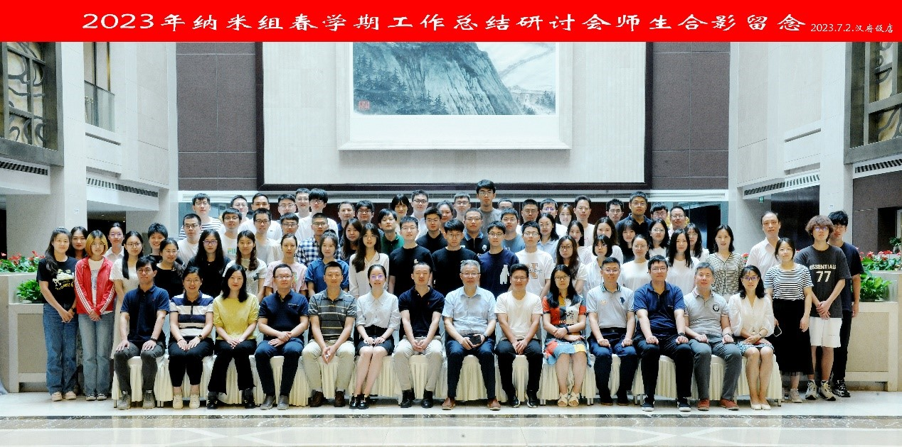

| 时间：2023/07/04 作者：赵一帆 | |||
| 梅雨霁，暑风和。2023年7月2日-3日，“2023年春季学期工作总结研讨会会议”在南京人民大会堂紫金厅顺利召开。本次会议由顾宁教授领衔，顾宁教授团队教职工、研究生共计80余人出席并作工作总结。 | |||
顾宁教授致开幕辞 |
|||
会议于7月2日上午8点准时开始，会议由安远、祝晓阳主持。首先，由顾宁教授致开幕辞，顾老师指出随着团队规模的不断扩大，“纳米组”由原先的纳米生物材料与器件一个小组，还拓展了“电磁生物环境与医疗诊疗技术”和“工程医学”两个小组。形成了一支围绕生物医学、微纳材料与器件、细胞生物信息学和血管信息与健康工程三大核心的多学科、多背景交叉的研究队伍。希望通过本次会议加强三个小组的学术交流与互动，增进师生情谊。随后，杨芳、焦真、李艳、陈怡、何泓良、盛静逸、杨莉、刘吉梓、周游、周雪锋、朱昱敏、何雅億、张凯、毛宇、郭志睿、邹美娟、刘亿一、黄斌、陈峰、吴昊及杨一子二十二位老师进行了学期工作进展汇报。 |
|||
| 7月3日的会议由张煜欣与司广祥主持，会议上，曹晨、姜韬、潘鸣飞、范霖、张子煜老师首先进行了总结报告。随后，严森、陈晓钰、谢园园、郑佳俊等31位研究生也进行了学期工作进展报告。最后，由顾宁教授进行本次会议的总结发言，顾老师对团队研究方向以及未来如何更好发展等问题进行了总结，对大家研究进展的展示方法进行了指导。鼓励各位青年教师、研究生同学持之以恒、勇攀学术高峰。 | |||
 参会人员合影 |
|||